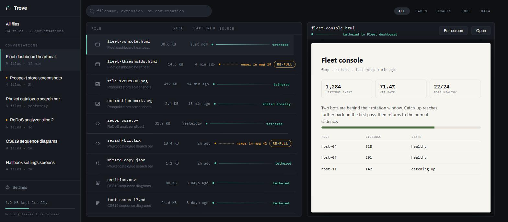
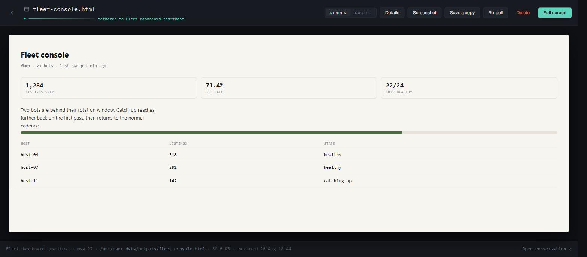
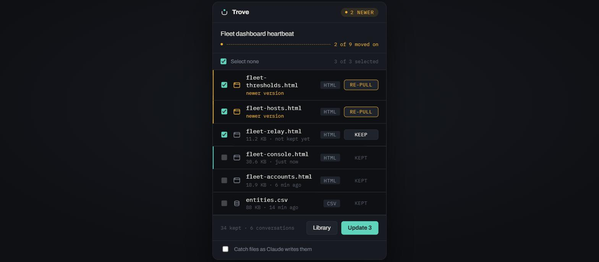

Chrome extension · MIT · local only
Files Claude wrote, kept.
The files Claude generates live only inside the conversation that made them. Trove keeps them on your machine, grouped by where they came from — and tells you when Claude has changed one since.
No account. No server. No analytics. Nothing leaves this browser.
Live On the Chrome Web Store. Free, and open source.
A file's tether is the line back to the conversation that wrote it. Aqua means your copy and Claude's still agree. Amber means they don't.
The problem
A downloaded file forgets where it came from.
To read a file Claude made, you click its card. To keep it, you download it — and it becomes a loose file in your Downloads folder with no memory of which conversation produced it, and no way to know when Claude has revised it. Trove keeps the file and the link at the same time.
How it works
Keep it, read it, pull it again.
Keep
Every file card in the conversation gets a Keep button. Or take the whole conversation from the toolbar, with per-file progress rather than a spinner.
Read
Files open on paper, full width, in their own tab. Nothing the extension owns is ever drawn over the document. Source turns the same view into an editor.
Re-pull
When Claude changes a file, Trove says so and offers the current version. If you edited your copy, it asks first — that is the one thing it cannot undo.



Design
A frame around someone else's document.
The chrome is graphite and recedes; the captured file gets the only light surface on screen. Colour is rationed to three meanings and used for nothing else.
Tether
Your copy and the conversation still agree.
#5FD3BC
Moved
They disagree — the source moved on, an edit is unsaved, or edits are about to be overwritten.
#E5A93C
Sever
Destruction, and only destruction.
#E0664E
-
Mono is data
If the filesystem produced the string — a name, a path, a byte count, a timestamp — it is set in IBM Plex Mono. If a person wrote it, it is Archivo.
-
Paper is sacred
No badge, watermark, toolbar or overlay is ever drawn on top of a rendered file. Controls live in the bands above and below it.
-
No history, say so
Re-pulling overwrites, so every screen that can destroy something names what is lost, in plain words, before it happens.
-
Local is a feature
Nothing leaves this browser sits in the library's footer permanently, not in a settings page nobody opens.
Privacy
There is nowhere for your files to go.
Trove has no server and no account. It makes no network requests except to
claude.ai, using the session you already have, to list and
download files from the conversation you are looking at. Everything it keeps lives in
the extension's own storage on your machine.
Install
One click, or build it yourself.
Trove is on the Chrome Web Store — add it to Chrome and open a conversation that has produced files. Building from source is for development, or for running a change that has not shipped yet; it needs Node 20 or newer.
# get it and build git clone https://github.com/UrsaCode/trove.git cd trove npm install npm run build # then, in Chrome: # Extensions → Developer mode → Load unpacked → select dist/
Open a Claude conversation that has produced files, and the Keep buttons appear on the file cards. Contributing has the development setup, and the known gaps if you want somewhere to start.